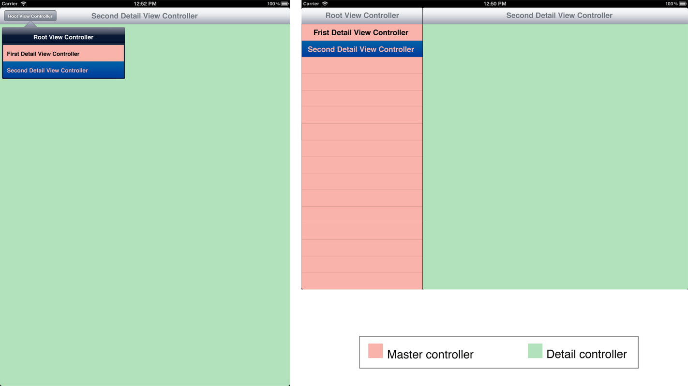

iOS 视图控制器编程指南：视图控制器基础
记录关于学习过的 iOS 文档
视图控制器基础
运行在 iOS 设备的应用程序显示内容时会受到屏幕空间量的限制因此必须有创造性的为用户呈现信息。有大量信息需要显示的应用程序因此只能显示从显示一部份内容开始，然后在用户与应用程序交互时隐藏或显示的额外内容。视图控制器对象提供基础设施管理内容和协调它的显示和隐藏。不同的视图控制类控制用户界面独立的部分，由你将用户界面的实现过程拆分为更小的更易管理的单元。
在你可以在你的应用程序使用视图控制器之前，你需要对在 iOS 应用程序主要用来显示内容的类有基本的了解，包括窗口和视图。任何视图控制器实现过程的关键部分是管理显示它的内容的视图。不管怎样，管理视图不是视图控制器唯一执行的工作。大多数视图控制器在产生过渡时会跟其它视图控制器通信和协调。因为视图控制器管理着许多连接，无论是向内看视图和关联的对象还是向外看其它控制器，明白对象之间的连接有时候是很困难的。作为替代，使用界面构造器创建 storyboards。Storyboards 使应用程序之间的关系可视化和极大简化在运行时初始化对象所花费的功夫。
屏幕，窗口，和视图组成视觉界面
图 1-1 展示了一个简单的界面。在左边，你可以见到组成这个界面的对象和明白它们如何连接彼此。
图 1-1窗口与它的目标屏幕和内容视图
这里是工作的三个主要对象：
图 1-2 展示这些类 (和关联的重要的类) 是如何在 UIKit 中定义的。
图 1-2 视图系统中的类

尽管你不需要为了明白视图控制器而去明白所有与视图有关的事情来，下面说明视图的大部分显著特征：
- 视图代表用户界面元素。每一个视图覆盖指定区域。在该区域内，它负责显示内容或响应用户事件。
- 视图可以嵌套入视图层次结构。子视图相对它的父视图定位和绘制。因此，当父视图移除时，它的子视图跟着移除。层次结构通过把它们放入一个共同的父视图中使它轻松的与相关联的视图组合。
- 视图可以动画它们的属性值。当更改可动画的属性值时，这个值会在已定义的时间周期内逐渐变化为新值。可以在单个视图动画更改穿过多个视图的多个属性值。
动画效果对于 iOS 应用程序开发是非常重要的。因为大部分应用程序同时只能显示一部分内容，动画效果允许用户见到过渡的发生和新值的变化。一个瞬间的过渡可能会使用户感到迷惑。 - 视图很少明白它们在你的应用程序中所扮演角色的作用。例如，图 1-1 展示一个按钮 (标题为 Hello)，它是特殊种类的视图，称为 control。Controls 知道如何响应这个区域内的用户交互，但他们不知道它们该控制什么。要解决这个问题，当用户与 control 交互时，它发送消息到你的应用程序的其它对象中。这种灵活的方式可以让单个类 (UIButton) 为多个按钮提供实现过程，触发不同的动作对应不同的配置。
一个复杂的应用程序需要许多视图，通常把它们组合到视图层次结构。它需要在屏幕上动画这些视图的子级的出现或离开以提供单个巨大的屏幕的错觉。最后，胃了保持视图类的可重用性，视图类不需要知道它们在应用程序中执行的具体作用。因此应用程序的逻辑－大脑－需要放置在其它位置。你的视图控制器是它的大脑管理应用程序的视图。
视图控制器管理视图
每一个视图控制器都组织和控制着视图；这个视图通常是视图层次结构的根视图。视图控制器在 MVC 模式中是控制器对象，但视图控制器也有 iOS 期望它执行的特定任务。这些任务在 UIViewController 类中定义所有视图控制器都从该类继承。所有视图控制器都会执行视图和资源管理任务；其它职责基于如何使用视图控制器。
图 1-3 展示的界面来自 图 1-1，但更新了视图控制器的使用。你永远不需要直接分配视图给窗口。你需要分配视图控制器给窗口，然后视图控制器自动添加它的视图到窗口。
图 1-3 视图控制器绑定到窗口并自动添加它的视图作为窗口的子视图
视图控制器的视图只有需要时才会加载。它也会在某些条件下释放视图。因为这些原因，视图控制器在应用程序的资源管理扮演重要部分。
视图控制器非常适合用来处理已连接的视图的动作。例如，当一个按钮按下后，它会发送消息到视图控制器。尽管视图它自己可能不知道它所执行的任务，但视图控制器清楚哪些按钮被按下和应该如何响应。这些控制器可以更新数据对象，动画或更改保存在视图的属性，或者甚至显示其它视图控制器内容到屏幕上。
通常，每一个被应用程序实例化的视图控制器只能见到应用程序的数据的一个子级。它知道如何显示这个特定的数据集合，不需要知道其它类型的数据。因此，应用程序的数据模型，用户界面设计，和你创建的视图控制器彼此之间互相影响。
图 1-4 展示一个管理食谱的应用程序例子。这个应用程序显示三个有关联但不同的视图。第一个视图列出应用程序管理的食谱。触击食谱进入第二个视图，它详细描述这个食谱。在详细描述视图触击食谱的图片显示第三个视图，一张巨大版本的图片。每一个视图通过不同的视图控制器对象管理它们的工作呈现相关的内容，填充子视图的数据，和响应用户在视图层次结构内的交互。
图 1-4由单独视图控制器管理的不同视图
这个例子演示了视图控制器的几个共同特点：
- 每个视图只被一个视图控制器控制。当视图被分配到视图控制器的 viwe 属性后，视图控制器就拥有了它。如果视图是子视图，它可以被同样的视图控制器或不同的视图控制器控制。当你在学习容器视图控制器时你将会学习到更多关于如何将多个视图控制器组织成单个视图层次结构。
- 每个视图控制器与应用程序数据的一个子级交互。例如，图像控制器只需要知道将要显示的图片。
- 因为每个视图控制器只提供用户体验的一个子级，视图控制器彼此之间必须进行通信使用户体验顺畅。它们也可能与其它控制器通信，例如数据控制器或文档对象。
视图控制器的分类
图 1-5 展示在 UIKit 框架中可用的视图控制器类以及其它对视图控制器重要的类。例如，UITabBarController 对象管理 UITabBar 对象，它实际显示与标签栏界面关联的标签。其它框架定义的额外视图控制器类没在图中显示。
图 1-5 UIKit 中的视图控制器类

视图控制器，包括 iOS 提供的和你定义的，可以分成两大类－内容视图控制器和容器视图控制器－代表视图控制器在应用程序中发挥的作用。
内容视图控制器显示内容
内容视图控制器 使用视图或一组组织到视图层次结构的视图在屏幕上呈现内容。有描述这一点的控制器就是内容视图控制器。内容控制器通常会知道关于它在应用程序中发挥的作用和相应的应用程序数据的子级。
这里是在应用程序中使用内容视图控制器的常用例子：
- 对用户显示数据
- 从用户收集数据
- 执行指定任务
- 在可用的命令或选项集之间导航，例如游戏的启动画面
内容视图控制器是应用程序的主要协调对象因为它们知道应用程序提供给用户的数据和任务细节的特定细节。
每个你创建的视图控制器对象负责管理单个视图层次结构内所有的视图。在视图层次结构中的视图控制器和视图之间一对一对应是关键设计考虑。你不应该使用多个内容视图控制器管理同一个视图层次结构。同样，你不应该使用单个内容视图控制器对象管理多个屏幕的内容。
有关定义内容视图控制器和实现需要的行为，见 Creating Custom Content View Controllers。
关于表格视图控制器
许多应用程序显示表格式的数据。因为这个原因，iOS 提供的内置 UIViewController 类的子类特别设计来管理表格式数据，这个类是 UITableViewController，管理表格视图和添加许多标准的表格相关行为例如选择的管理，行编辑，和表格配置的支持。这些额外的支持最大限度减少创建和初始化基于表格的界面的代码量。你也可以在 UITableViewController 的子类添加其它自定义行为。
图 1-6 展示一个使用表格视图控制器的例子。因为它是 UIViewController 类的子类，表格视图控制器始终有一个界面根视图的指针 (通过它的 view 属性) 但它也有在界面显示表格视图的单独指针。
图 1-6 管理表格式数据
更多信息关于表格视图，见 Table View Programming Guide for iOS。
容器视图控制器排列其它控制器的内容
容器视图控制器包含的内容属于其它视图控制器。这些其它视图控制器是明确分配到容器视图控制器作为它的子级。容器视图控制器可以呈现其它控制器和其它容器的子级。最终，这个控制器的组合建立视图控制器的层次结构。
每种类型的容器视图控制器建立的用户界面是由它的子级决定。不同类型的容器视图控制器之间用户界面的视觉呈现和对子级的设计有很大的不同。例如，这里有一些区分不同容器视图控制器的方式：
- 容器提供它自己的 API 管理它的子级。
- 容器决定它的子级之间是否有关系和是什么关系。
- 容器像其它视图控制器一样管理视图层次结构。容器也可以添加任意子级的视图到它的视图层次结构。容器决定这样的视图的添加时间和如何调整它的尺寸适应容器的视图层次结构，但除此之外子视图控制器仍然负责视图和它的子视图。
- 容器可以在它的子级加上特别的设计因素。例如，容器可以限制它的子级为某些视图控制器类，或它可以期待这些控制器提供一些额外的内容用作配置容器的视图。
这些内置的容器类围绕着重要的用户界面原则组织。你可以通过这些由容器管理的用户界面组织复杂的应用程序。
关于导航控制器
导航控制器呈现有组织的层级结构的数据并且它是 UINavigationComtroller 类的一个实例。这个类的方法提供对基于堆栈的内容视图控制器集合的管理支持。这个堆栈代表用户通过分级数据获取的路径，栈的底部代表起点而顶部代表用户在数据中的位置。图 1-7 展示的屏幕来自联系人应用程序，它使用导航控制器为用户呈现联系人信息。每个页面顶部的导航栏属于导航控制器。屏幕的其它部分对用户显示由内容视图控制管理的特定的数据层信息。用户在界面与控件交互时，这些控件会告诉导航控制器应该显示序列中的下一个视图控制器还是应该退出当前视图控制器。
图 1-7 导航分级数据

尽管导航控制器的主要工作是管理它的子视图控制器，但它也管理少数视图。具体来说，它管理导航栏 (显示用户在数据层次结构的位置信息)，按钮 (导航返回之前的屏幕)，和任何当前视图需要的自定义控件。不要直接修改属于视图控制器的视图。应该通过设置每一个子视图控制器的属性配置导航控制器的控件显示。
有关如何配置和使用导航控制器对象的信息，见 Navigation Controllers。
关于标签栏控制器
标签栏控制器是将应用程序划分为两个或更多的不同操作模式的容器视图控制器。标签栏控制器是 UITabBarController 类的一个实例。标签栏有多个标签，每一个都代表子视图控制器。选择标签会使标签栏控制器在屏幕上显示关联的视图控制器的视图。
图 1-8 展示时钟应用程序的几个模式和相应的视图控制器之间的关系。每个模式都由内容视图控制器管理主要内容区域。在这时钟应用程序的案例中，Clock 和 Alarm 视图控制器都显示了导航风格的界面在屏幕的顶部容纳额外的控件。其它模式使用内容视图控制器呈现单个屏幕。
图 1-8不同的时钟应用程序模式。
你可以使用标签栏控制器显示不同类型的数据或以不同的方式呈现相同的数据。
更多信息关于如何配置和使用标签栏控制器，见 Tab Bar Controllers。
关于分割视图控制器
分割视图控制器将屏幕划分为多个部分，每个部分可以单独更新。分割视图控制器的外观与它的方向紧密关联。分割视图控制器是 UISplitViewController 类的一个实例。分割视图控制器的内容来自两个子视图控制器。
图 1-9 展示 MultipleDetailViews 简单应用程序的分割视图界面。在纵向模式，只显示详细视图。列表视图显示可弹出的内容。在横向模式显示时，分割视图控制器显示两个并排的子级的内容。
图 1-9 在横向和纵向模式中的主－次界面

分割视图控制器只对 iPad 支持并且是设计来帮助你利用大屏幕设备的优点。这是在 iPad 应用程序中实现主次界面的完美方式。
关于如何配置和使用分割视图控制器，见 Popovers。
关于弹出控制器
再看一次图 1-9。当分割视图控制器在纵向模式显示时，主视图在特定的控件中显示，它称为 popover。在 iPad 应用程序中，你可以使用弹出控制器 (UIPopoverController) 在你的应用程序中实现弹出功能。
弹出控制器实际上不是一个容器；它没有从 UIViewController 类继承。但在实践中，弹出控制器是与容器相同的，因此你在使用它们时应该应用同样的编程原则。
关于如何配置和使用弹出控制器，见 Popovers。
关于分页视图控制器
分叶视图控制器是一个用来实现分页布局的容器视图控制器。这样的布局让用户像翻书一样浏览不同页面的内容。分页视图控制器是 UIPageViewController 类的一个实例。每个页面的内容都由内容视图控制器提供。分页视图控制器管理页面之间的过渡效果。当需要新的页面时，分页视图控制器调用关联的数据源为下一个页面重新获取视图控制器。
关于如何配置和使用分页视图控制器，见 Page View Controllers。
视图控制器的内容能以许多方式显示
要使视图控制器的内容对用户可见，它必须与窗口关联，这里有许多操作的方式：
- 使视图控制器称为窗口的根视图控制器。
- 使视图控制器成为容器的子级。
- 在弹出控件显示视图控制器。
- 在另一个视图控制器呈现它。
图 1-10 展示一个联系人应用程序的例子。当用户按下添加按钮添加新的联系人时，联系人视图控制器会呈现新建联系人的视图控制器。新建联系人屏幕一直保持可见直到用户取消操作或提供足够多的关于联系人的信息然后将它保存到联系人数据库。然后消息会发送给联系人视图控制器，由它撤销被呈现的控制器。
图 1-10呈现视图控制器
被呈现的视图控制器不是特殊类型的视图控制器－被呈现的视图控制器可以是内容或容器视图控制器与被绑定的内容视图控制器。在实际操作中，内容视图控制器特别设计为通过其它控制器呈现，因此可以认为它是内容视图控制器的变种。尽管容器视图控制器在由它管理的视图控制器之间定义了特别的关系，使用呈现让你定义被呈现和呈现之间的关系。
大多数时间，呈现视图控制器是为了从用户收集信息或因为某些目的而吸引用户注意力。一旦目的达成，呈现中的视图控制器会销毁被呈现的视图控制器并返回标准应用程序界面。
值得注意的是被呈现的视图控制器可以自己呈现其它视图控制器。当你需要按顺序执行几个模态动作时这种链接视图控制器的能力就很有用。例如，在图 1-10 中如果用户触击新建联系人屏幕中的添加图片按钮并选择一个已有的图片，新建联系人控制器会呈现一个图片选取界面。用户必须分别退出图片选取屏幕和退出新建联系人屏幕才能返回联系人的列表。
在呈现视图控制器时，由一个视图控制器决定使用多少屏幕空间呈现视图控制器。这一部分的屏幕被称作 presentation context。通常，呈现上下文被定义为覆盖整个窗口。
更多关于如何在你的应用程序中呈现视图控制器的信息，见 Presenting View Controllers from Other View Controllers。
视图控制器协同工作创建应用程序的界面
视图控制器管理它们的视图和其它关联的对象，但视图控制器之间也彼此协同工作提供无缝过渡的用户界面。工作的分配和应用程序的视图控制器之间的通信是它们工作的必要部分。因为这些关系对于构造一个复杂的应用程序是非常重要的，接下来的章节预览已经讨论过的关系和对它们更进一步的详细描述。
父与子关系代表包含
视图控制器层次结构以单个父辈开始，窗口的根视图控制器。如果该视图控制器是一个容器，它可能有提供内容的子级。这些控制器反过来说，也可以是一个容器与它们自己的子级。图 1-11 展示一个视图控制器层次结构的例子。根视图控制器是一个标签视图控制器与四个标签。第一个标签使用导航控制器它有自己的子级而其它三个标签通过内容视图控制器管理和没有自己的子级。
图 1-11 父－子关系
每个视图控制器的区域由它的父辈决定如何填充。根视图控制器的区域由窗口决定。在图 1-11中，标签视图控制器从窗口获取它的尺寸。它为标签栏保留空间而剩余的空间分配给它的子级。如果导航控制器是当前显示的控件，它会为导航栏保留空间并把剩余部分分配给内容控制器。在每一步中，子视图控制器的视图都是通过它的父辈调整尺寸并放入父辈的视图层次结构。
视图和视图控制器的组合也在为你处理应用程序事件的响应者队列中成立。
同级关系代表容器内的同伴
这种类型的容器定义的关系(如果存在)是通过共享它的子级。例如，比较标签视图控制器和导航控制器。
- 在标签视图控制器中，标签代表不同内容的屏幕；标签栏控制器没有定义它的子级之间的关系，尽管你的应用程序可以选择这样做。
- 在导航控制器中，同级显示被分配在堆栈中关联的视图。同级通常会与其它同级共享连接。
图 1-12 展示与导航控制器关联的视图控制器常用配置。第一个子级 master，显示可用的内容但没有显示所有的细节。当这个项被选中后，它把新的同级放入导航控制器使用户可以见到额外的细节。同样，如果用户需要更多细节，这个同级可以放入其它视图控制器对用户展示更详细的内容。当同级如这个例子中定义了明确的关系，它们彼此之间会常常配合，直接或通过容器控制器。
图 1-12在导航控制之间的同级关系。
Presentation 代表短暂显示其它界面
当视图控制器想执行一些任务时会呈现其它视图控制器。由已呈现的视图控制器掌控这个行为。它会配置被呈现的视图控制器，从它接收信息，最后会退出被呈现的视图控制器。不管怎样，当开始呈现后，被呈现的视图控制器是临时添加到窗口的视图层次结构的。
在图 1-13，内容视图控制器被绑定到标签视图中呈现一个视图控制器进行执行任务。Content 控制器是正在呈现的视图控制器，而 Modal 视图控制器是被呈现的视图控制器。
图 1-13 通过内容视图模态呈现
当视图控制器被呈现后，它所覆盖的屏幕部分在另一个视图控制器提供的呈现上下文 (presentation content) 中定义。提供呈现上下文的视图控制器不需要与被呈现的视图控制器相同。图 1-14 展示与图 1-13 相同的视图层次结构。你可以见到 Content 视图呈现了一个视图控制器，但没有提供呈现上下文。不仅如此，视图控制器还可以通过标签控制器呈现。因为这个原因，尽管呈现中的视图控制器只覆盖标签控制器提供的屏幕的一部分，但被呈现的视图控制器也可以使用属于标签视图控制器的完整区域。
图 1-14 实际呈现由根视图控制器执行。
控制流代表内容控制器之间的协调
在一个有多个视图控制器的应用程序中，视图控制器通常在应用程序的整个生命周期中创建和销毁。在它们的生命周期期间，视图控制器彼此互相通信为用户呈现无缝的用户体验。这些关系代表应用程序的控制流。
最常见的，控制流发生在当新的视图控制器实例化时。通常，视图控制器会因为其它视图控制器的动作而实例化。对于第一个视图控制器，称为源视图控制器 (source view controller) 指挥第二个视图控制器，目标视图控制器 (destination view controller)。如果目标视图控制器需要对用户呈现数据，数据通常由源视图控制器提供。同样，如果源视图控制器需要来自目标视图控制器的信息，由它负责建立两个视图控制器之间的连接。
图 1-15 展示最常用的这些关系例子。
在图中：
- 导航控制器的子级推送其它子级到导航堆栈中。
- 视图控制器呈现其它视图控制器。
- 视图控制器在弹出视图中显示其它视图控制器。
图 1-15 源视图控制器和目标视图控制器之间的通信
每一个视图控制器都由呈现它控制器配置。当多个控制器一起工作时，它们在整个应用程序中建立通信队列。
在这个队列中的每个链接上的控制流由目标视图控制器定义。源视图控制器使用目标视图控制器提供的约定。
- 目标视图控制器提供用作配置它的数据和呈现的属性。
- 如果目标视图控制器需要与队列中前面的视图控制器通信，可以使用委托。当源视图控制器配置目标视图控制器的其它属性时，它也可以预计提供一个实现委托协议的对象。(目标视图控制器提供委托，源视图控制器实现委托)
使用控制流公约的好处是每一对源视图控制器和目标视图控制器之间分工明确。当源视图控制器要求目标视图控制器执行任务时数据流向下传递；由源视图控制器驱动处理。例如，它可以提供由目标控制器显示的特定数据对象。在其它方向，当视图控制器需要传输信息返回给催生它的源视图控制器时数据流向上传输。例如，当任务完成时它可以传输信息。
还有，通过一致的实现控制流模型，可以确保目标视图控制器不会知道过多关于配置它们的源视图控制器。当它知道有关队列前的视图控制器时，它只知道由类实现的委托协议，不知道该类的类。通过保持视图控制器彼此之间不知道过多，单个控制器可重用性变得更高。其它人阅读你的代码时，一致实现的控制流模型能清晰的看到任意一对控制器之间的通信路径。
Storyboards 帮助你设计用户界面
当使用 storyboards 实现你的应用程序时，使用界面构造器组织应用程序的视图控制器和任何有关联的视图。图 1-16 展示一个在界面构造器的界面布局例子。可视化的界面构造器让你的应用程序流程一目了然。你可以见到应用程序实例化了哪些视图控制器和实例化的顺序。不仅如此，你还可以在 storyboards 配置复杂的视图集合和其它对象。最终 storyboards 会以文件形式保存在你的项目中。当编译项目时，在项目中的 storyboards 会被处理并复制到应用程序包，由应用程序在运行时加载。
图 1-16 界面构造器中的 storyboard 图表。

通常，iOS 可以在需要时自动实例化在 storyboards 中的视图控制器。同样，与每个控制器相关联的视图层次结构当它需要显示时也会自动加载。视图控制器和视图都会实例化为与界面构造器所配置的相同属性。因为大多数的行为都是自动的，它大大的简化在应用程序中使用视图控制器所需要的工作。
创建 storyboards 的完整细节在 Xcode Overview 中描述。现在，你需要知道一些在应用程序中实现 storyboards 时用到的必要技术。
场景 (scene) 代表在屏幕上通过视图控制器管理的区域。你可以把场景认为是视图控制器和与它关联的视图层次结构。
你可以在同一个 storyboards 的场景之间建立关系。关系在 storyboards 直观表现为一个场景到另一个场景的连接箭头。当你使两个对象之间连接时界面构造器通常自动推断新关系的细节。有两种重要关系种类。
- 包含代表两个场景之间的父子关系。视图控制器被包含在其它控制器中，当它的父控制器被实例化后它也会被实例化。例如，第一个连接从导航控制器到其它场景定义了将第一个视图控制器推入到导航控制器堆栈中。当导航控制器被实例化后这个控制器会自动实例化。
在 storyboards 中使用包含关系的一个优点是界面构造器可以调整它的子视图控制器的外观来反映其存在祖先。这允许界面构造器显示内容视图控制器在最终的应用程序中出现。 segue代表一个场景到另一个的视觉过渡。在运行时，segues 可以被各种动作触发。当 segue 被触发时，它可以使新视图控制器被实例化和在屏幕上过渡。
尽管 segue 总是从一个视图控制器到另一个，但有时候第三个对象可以参与到处理中。这个对象实际上是触发 segue。例如，如果你将源视图控制器的视图层次结构中的按钮连接到目标视图控制器，当用户触击按钮时，segue 会触发。当 segue 是直接从源视图控制器到目标视图控制器时，通常代表你想以编程方式触发 segue。
不同类型的 segues 提供两个不同的视图控制器之间所需要的常用过渡效果：- push segue 把目标视图控制器放入导航控制器的堆栈。
- modal segue 呈现目标视图控制器。
- popover segue 以弹出方式显示目标视图控制器。
custom segue 允许你设计属于你的过渡效果显示目标视图控制器。
segue 共享了常用的编程模型。在这个模型中，目标控制器是通过 iOS 自动实例化然后源视图控制器被调用来对它配置。这个行为适配的控制流模式在 Control Flow Represents Overall Coordination Betweent Content Controllers 中描述。
你也可以创建视图控制器和保存在同一个场景内的对象之间的连接。outlets 和 action 让你细致的定义视图控制器和与它关联的对象之间的关系。连接通常不能在 storyboards 见到它自己但可以在界面构造器的 Connections Inspector 浏览。
系列文章
iOS 翻译 《View Controller Programming Guide for iOS：Introduction》
iOS 翻译 《View Controller Programming Guide for iOS：View Controller Basics》
iOS 翻译 《View Controller Programming Guide for iOS：Using View Controllers in Your App》
iOS 翻译 《View Controller Programming Guide for iOS：Using View Controllers in Your App》
iOS 翻译 《View Controller Programming Guide for iOS：Creating Custom Content View Controllers》
iOS 翻译 《View Controller Programming Guide for iOS：Resource Management in View Controllers》
iOS 翻译 《View Controller Programming Guide for iOS：Responding to Display-Related Notifications》
iOS 翻译 《View Controller Programming Guide for iOS：Resizing the View Controller’s Views》
iOS 翻译 《View Controller Programming Guide for iOS：Using View Controllers in the Responder Chain》
iOS 翻译 《View Controller Programming Guide for iOS：Supporting Multiple Interface Orientations》
iOS 翻译 《View Controller Programming Guide for iOS：Coordinating Efforts Between View Controllers》
iOS 翻译 《View Controller Programming Guide for iOS：Enabling Edit Mode in a View Controller》
iOS 翻译 《View Controller Programming Guide for iOS：Creating Custom Segues》
iOS 翻译 《View Controller Programming Guide for iOS：Creating Custom Container View Controllers》